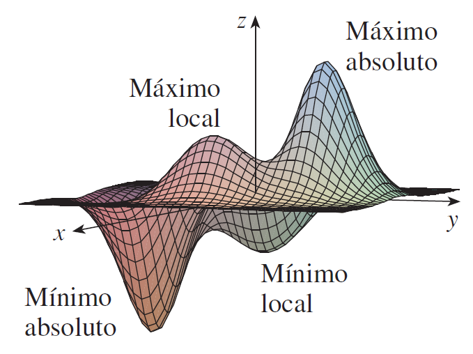
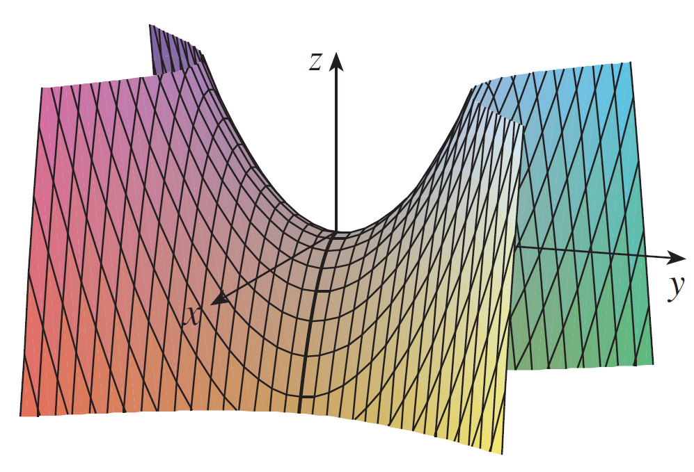
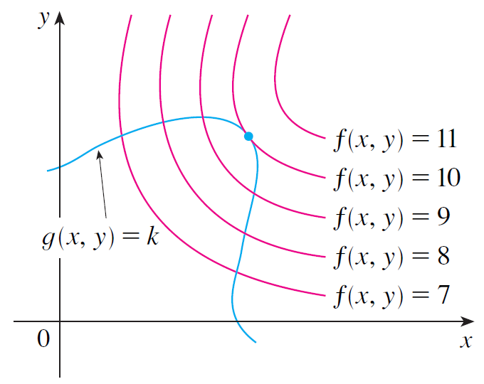
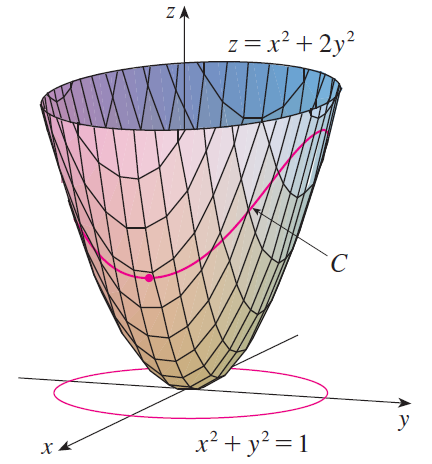

PARTE 2 · AULAS 19–23
Máximos, mínimos e multiplicadores de Lagrange
Pontos críticos, classificação local, extremos absolutos e otimização condicionada por multiplicadores de Lagrange.
1. Extremos locais
Em um ponto interior diferenciável de máximo ou mínimo local, o gradiente deve ser nulo.

2. Teste da segunda derivada
| Condição | Conclusão |
|---|---|
| \(D>0,\ f_{xx}>0\) | mínimo local |
| \(D>0,\ f_{xx}<0\) | máximo local |
| \(D<0\) | ponto de sela |
| \(D=0\) | inconclusivo |
Para \(f=x^2+y^2-2x-4y\),
O ponto crítico é \((1,2)\). Como \(f_{xx}=2\), \(f_{yy}=2\), \(f_{xy}=0\), temos \(D=4>0\), portanto há mínimo local.

3. Extremos absolutos
Em região fechada e limitada: encontre os candidatos no interior, analise toda a fronteira e compare os valores da função.
4. Multiplicadores de Lagrange
Geometricamente, no extremo condicionado, a curva de nível de \(f\) é tangente à restrição.

Otimize \(f=x+y\) sujeito a \(x^2+y^2=1\).
Logo \(x=y\), portanto

Abra o ambiente 3D para explorar geometricamente os objetos relacionados a este conteúdo.